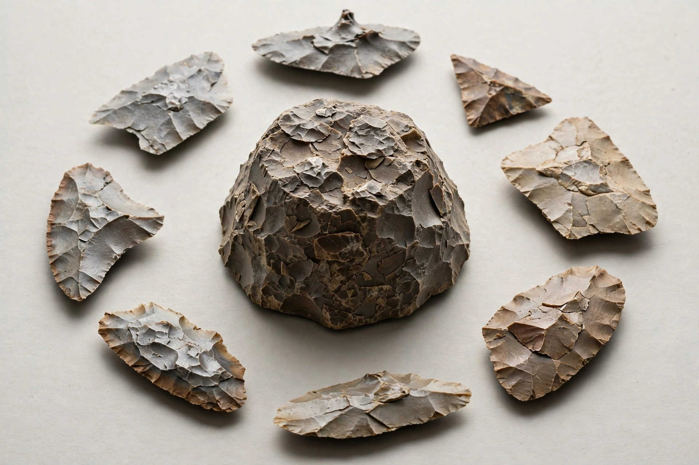

Lithic reduction is the process of fashioning stones into tools or weapons by removing some parts of the stone. It has been intensively studied and many archaeological industries are identified almost entirely by the lithic analyses of the precise style of their tools and the chaîne opératoire of the reduction techniques used. In industrial use, "lithic reduction" may also refer to incidentally breaking a stone.
Reduction is accomplished by striking a stone core with a hammerstone (hard hammer percussion) or with a softer hammer of antler, bone or wood (soft hammer percussion), or by applying pressure with a pointed tool (pressure flaking). Suitable raw materials — flint, chert, obsidian, quartzite — fracture conchoidally, allowing the knapper to control the size and shape of the detached flakes.
The waste products of reduction, called debitage, include flakes, chips, shatter and spent cores; their analysis allows archaeologists to reconstruct knapping strategies at a site. Refitting — rejoining flakes to cores — can reveal the sequence of individual knapping events. Reduction sequences are central to the study of technological organisation in prehistory, from the Oldowan (from about 2.6 million years ago) through Acheulean handaxe industries to the blade and microlith technologies of later periods.